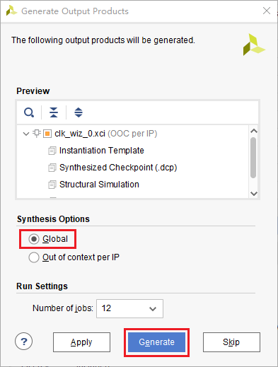
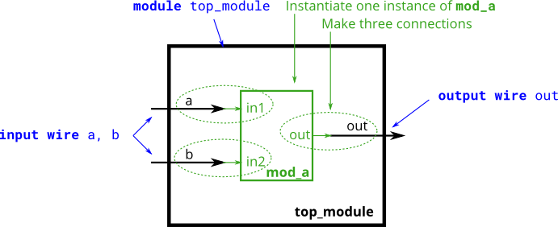
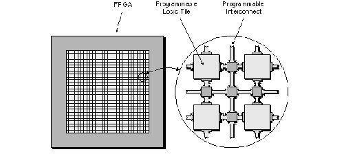
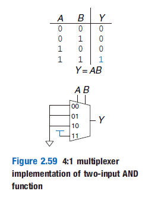

FPGA Tutorial
教程仍然处于编写与修改中，受限于作者对于这个领域的理解水平，很可能会存在错误。如果你发现了任何错误，欢迎发起一个issue。
请访问 https://shanghaitechgeekpie.github.io/FPGA-tutorial/#/ 阅读本教程
FPGA是现场可编程门阵列(Field Programmable Gate Array)的简称。
现场可编程
FPGA是可以重复编程以实现不同功能的器件
门
FPGA所能编程实现的最小单元是门电路，比如通过编程实现一个与门
阵列
FPGA主要是由许多可编程逻辑块(Configurable Logic Block)组成的

FPGA是通用性与专用性妥协的产物。它相比于通用计算机更加专用，因此速度与吞吐量更大，功耗更低。它相比于专用集成电路ASIC，以高功耗与大面积换取通用性。
这个教程使用Xilinx的开发套件Vivado进行开发，所有工程文件都可以在src文件夹中找到。本教程包括：
- LED闪烁 FPGA开发流程简介
- verilog语法简介
如果读者在掌握了FPGA的一些用法后仍对FPGA有所兴趣，我校开设了几门与FPGA相关的课程，它们是：
- EE116 基于FPGA的硬件系统设计
- EE113 数字集成电路I
- EE216 可重构计算
引用
EE115 Topic 1 Introduction.ppt p34
Intro to 嵌入式点灯工程师
在开始正式学习FPGA前，我们先通过一个简单的例子来看看FPGA的开发流程是怎样的，FPGA与单片机又有什么区别。
开发板的选购
FPGA的主要厂商包括Altera与Xilinx，至少在以前是这样的。然后在某一天Altera被Intel收购了，接着Xilinx被AMD收购了。于是这又变成牙膏厂和农企之间的争斗了。
由于FPGA并不像软件开发拥有众多的开源项目，开发依赖特定厂商的工具，本文使用XIlinx的Vivado进行开发。Xilinx生产两种类型的FPGA，一种是纯FPGA，一类是FPGA与Arm的结合体，也就是ZYNQ系列。极其推荐使用ZYNQ的理由是你可以同时学习FPGA和ARM的开发流程，更可以学习如何用FPGA辅助ARM运算，非常划算。本文使用的是Xilinx的ZYNQ 7010系列的开发板。
Vivado的安装
Vivado是用来开发Xilinx（现AMD）FPGA的开发套件。其中主要包括，Vivado——hdl开发测试，集成ip等、Vitis——Arm核心软件开发、Vitis(HLS)——用于进行高层次综合语言（HLS）的开发与DocNav用来查找阅览开发文档。
 如果你的安装空间足够大，建议Design Tools和Devices都勾选上，其他保持默认。如果不够，在Vitis Unified Software Platform中一定要勾选Vivada和Vitis。在Devices中一定要勾选开发板对应的型号。
如果你的安装空间足够大，建议Design Tools和Devices都勾选上，其他保持默认。如果不够，在Vitis Unified Software Platform中一定要勾选Vivada和Vitis。在Devices中一定要勾选开发板对应的型号。
创建项目
在打开Vivado之后，应该是这样的。点击Quick Start栏目中的Create Project。

项目名称任意，注意在Project Type中选择RTL Project。
然后点击Next，知道你见到如下画面。这里非常重要。 这里选择的是你开发板的型号，咨询你开发板的客服或者查找他们给的资料。

最后点击Finish完成创建。顺利的话，你会见到下面的画面。我们注意到在左侧有Flow Navigator，这里展示了FPGA开发中所有的流程，并且已经按照顺序罗列好了。

Project Manager
FPGA是通过硬件描述语言(Hardware Description Language)进行开发的。HDL包括SystemVerilog，Verilog，VHDL以及Chisel3。SystemVerilog与Verilog的关系就是c和c++之间的关系，所以本文并不区分他们，均以verilog统称。VHDL将在EE115、EE116中介绍。Chisel3的教程可见chisel-lang。本文主要以Verilog为主，会提供简单的Verilog教程，涵盖大部分可综合的verilog，和小部分不可综合的verilog。
毫无疑问，开发FPGA的第一步就是编写HDL了。
IP Integrator
IP是(Intellectual Property)的缩写。一个比较有名的IP提供商就是ARM了。ARM并不生产任何芯片，却能通过授权IP给其他芯片厂商以此获利。当然我们所使用的IP并不都像ARM提供的那么复杂，比如在之后我们所使用的用于生成各种频率时钟的IP。
IP节省了开发、验证时间，提高了开发速度。
Simulation
仿真是为了检查错误，它的作用相当于编程中的断点调试。当然，随着集成电路规模的发展，除了仿真之外也有其他验证方法，比如SystemVerilog的UVM，比如形式化验证。关于SV的验证，可以参考《SystemVerilog for Verification》。相对于其他方法，仿真可以给你一种更加直观的感受，推测问题出在哪里。
仿真的重要性不言而喻，随着工作流程的推近，修改一个bug的成本是递增的。对于FPGA来说，如果已经交付厂家生产，还能通过重写程序来修改。而对于ASIC来说，如果已经流片了，那就可以准备破产了。这也是为什么我们希望尽早消灭错误。
RTL Analysis
RTL是(Register Transfer Level)的缩写，意味使用寄存器这一级别来表示数字电路。而HDL大多是在行为层面描述电路，更加抽象。
RTL分析则是通过分析生成的电路来查看编写的HDL是否有问题。
Synthesis
Synthesis直译为综合，在这一步，HDL被综合成网表(Net List)。网表是比RTL更低级的表示形式，它们通常由可以生产的最小单元组成。你可以理解为门电路。
Implementation
这一步，HDL终于被真正的变成了硬件。在这一步，Vivado根据生成的网表，通过算法解和约束推测出一个最优的布局和连线。这个最优取决于你的选择，你可以选择功耗优先，频率优先等。这个约束有引脚约束与时序约束等。
Program and Debug
在Implementation结束后，就可以下载到FPGA中运行了。FPGA是通过二进制文件进行编程的，这和编译生成汇编是类似的。
除了通过示波器观察波形，Vivado还支持在FPGA内配置一个示波器连接电脑展示波形。不过这会占用FPGA的可编程的面积。
编写HDL
点击Project Manager下的Add Source，

点击next，选择Create File。在弹出的窗口中选择SystemVerilog，名称任意。
点击Finish。在弹出的Define Module中创建一个名为clk的input信号和名为led的output信号。点击Ok。
在Design Source下多出一个文件(*.sv)，sv代表SystemVerilog。点击它。

我们发现里面会有一大堆注释和这段语句。这段语句定义了这个Module的输入输出。而在module与endmodule中间，是我们描述整个硬件行为的部分。我们之前定义了两个信号，led毫无疑问会连接到开发板上LED，并控制LED的闪烁。而clk是输入信号，这是做什么的呢？clk是clock的简写，代表时钟。时钟是数字电路的“心脏”。在每个时钟周期内，数字电路都会完成一次运算。CPU中的主频，实际上就是说的时钟信号的频率。
module led(
input clk,
output led
);
endmodule
我们修改代码如下，并保存。
module led(
input clk,
output logic led
);
always_ff@(posedge clk)begin
led <= ~led;
end
endmodule
这段代码描述了什么样的电路呢？我们可以通过RTL Analysis来查看结果。点击Open Elaborated Design。右侧就是我们的RTL设计。RTL_REG会在clk的上升沿，将D的数据输入到Q。这个由
always_ff@(posedge clk)描述。而RTL_INV负责将Q的数据取反然后输入到D，取反意味着1会变成0，vice versa。这意味着在每一个时钟上升沿，led的值都会变化，产生LED闪烁的效果。

仿真
在编写完HDL后，第一件应该做的就是仿真了。在debug程序时，我们都要给程序一个输入，然后观察输出是什么，以此来寻找程序的bug。在仿真数字电路，同理我们需要激励（输入），来观察响应（输出）是否正确。而这一切都体现在波形图上。
现在我们来创建一个激励，点击Add Sources，选择Add or Create Simulation Resources。点击Next。
点击Create File，创建一个SV类型的文件，名称随意。
在Simulation Resources中找到我们刚刚创建的文件。

修改其内容为，
module led_sim();
logic clk,led;
led a(
.clk(clk),
.led(led)
);
initial begin
clk = 0;
forever #(10) clk = ~clk;
end
endmodule
接着点击Simulation中Run Simulation下的Run Behavioral Simulation。在菜单栏点击Run for 1ns，然后点击缩小按钮，直到能看见clk的波形不再是一条直线。
此时问题来了，clk的波形是红色的，而且它的值是X。

原来verilog中logic类型并不只有两种状态，而是有四种状态。
| 值 | 含义 |
|---|---|
| 0 | 低电压 |
| 1 | 高电压 |
| Z | 高阻态 |
| X | 错误 |
所以我们的程序出现了错误。问题在哪里？原来是led没有初始化。所谓初始化就是它的初值是不确定的，而之后led <= ~led 是依赖于初值的，所以led之后的值就不确定。修改如下
output logic led=0
保存后，点击菜单中的Relaunch Simulation。观察到led的波形终于会在0与1之间跳动了，我们程序的行为终于正确了。
综合
点击左侧的Run Synthesis，在弹出的窗口点击Ok。等待综合完成

选择Open Synthesized Design，点击OK。或者在左边点击Open Synthesized Design。

我们此时就可以看到电路被综合以后的结果。BUF是为了隔离其他电路对这部分电路的影响，包括提高驱动能力，降低延迟等。FDRE表明这首先是一个D触发器，接着它是同步使能，同步复位。FDRE的D与Q代表数据的输入与输出。C表示时钟信号。这与我们在上一个电路图中看到的是一致的。多出来的CE代表时钟使能，R表示复位。它们永远保持在一个状态，与我们的电路无关，所以不会出现在上一幅图中。但是如果要实现出来确实必要的。上一幅图中的反相器被一个叫LUT的替换了，LUT是查找表的意思，是FPGA实现组合逻辑的一种方式。

可见综合后的电路是可以被真正实现的，因此包含了更多的细节。这些细节是与我们电路功能不太相关的，因此可以在设计的时候被忽略的。
实现
点击左侧的Run Implementation，在弹出的窗口点击Ok。等待实现完成
和之前一样打开Implemented Design，就可以看到这个程序真正在FPGA上实现的结果了。选择Leaf Cell下面的LUT，点击工具栏里的Routing Resources，然后放大到那个位置。这就是我们整个程序主体的实现结果。可以看见图中选中的即为synthesized design中的LUT，而另一个蓝色方块为FDRE。绿色代表它们之间的连线。
生成bitstream与下载
这时候我们就已经到了整个的设计流程的最后一步，下载程序。和之前一样点击Generate Bitstream，然后点击Ok。我们马上就见到了报错。生成失败了！这是为什么呢？

查看Log与Message，我们发现了几条重要线索。
Message(Error):
[DRC NSTD-1] Unspecified I/O Standard: 2 out of 2 logical ports use I/O standard (IOSTANDARD) value 'DEFAULT', instead of a user assigned specific value. This may cause I/O contention or incompatibility with the board power or connectivity affecting performance, signal integrity or in extreme cases cause damage to the device or the components to which it is connected. To correct this violation, specify all I/O standards. This design will fail to generate a bitstream unless all logical ports have a user specified I/O standard value defined. To allow bitstream creation with unspecified I/O standard values (not recommended), use this command: set_property SEVERITY {Warning} [get_drc_checks NSTD-1]. NOTE: When using the Vivado Runs infrastructure (e.g. launch_runs Tcl command), add this command to a .tcl file and add that file as a pre-hook for write_bitstream step for the implementation run. Problem ports: clk, and led.
这是什么意思呢？我们看不懂，然而抓取关键字我们知道这是和I/O有关系，而且这个报错是关于clk和led这两个信号的。继续debug，我们发现还有几个warning。
massage(warning):
[Constraints 18-5210] No constraints selected for write. Resolution: This message can indicate that there are no constraints for the design, or it can indicate that the used_in flags are set such that the constraints are ignored. This later case is used when running synth_design to not write synthesis constraints to the resulting checkpoint. Instead, project constraints are read when the synthesized design is opened.
原来这个错误可能和没有约束文件有关系。约束文件是干什么的呢？HDL只能描述FPGA内的电路的行为，对于其它则没有能力去描述。比如我希望某个信号是连接到外部IO口，比如我希望某一段电路的延迟小于某个数值。这时候就需要约束文件去描述了。
重新打开Synthesized Design。点击I/O Pins，随后修改Package Pin与I/O std。这对于每个开发板都是不一样的，这需要查找原理图才能知道。注意如果是Zynq，时钟信号要连接到PL端的时钟。

Ctrl+s保存，在弹出的窗口修改名称，点击OK。

我们可以发现，在Sources窗口下的Constraints里面多了一个*.xdc的文件。它的内容正好对应我们修改的内容。
set_property IOSTANDARD LVCMOS33 [get_ports clk]
set_property IOSTANDARD LVCMOS33 [get_ports led]
set_property PACKAGE_PIN N18 [get_ports clk]
set_property PACKAGE_PIN P15 [get_ports led]
此时就可以重新点击Generate Bitstream。等待重新综合和实现完成。这个时候插入你的开发板，然后选择Open Hardware Manager，点击Ok。
选择Open Target，然后选择Auto Connect。此时应该会连接上你的设备。

然后选择Program Device，在弹出的窗口里选择Program。就可以下载了。

这时候如果一切正常，你会发现LED一直发光。
什！为什么不是闪烁？问题出在哪里？
为什么灯不闪烁？
为什么仿真结果是正确的，但是下载到板上却是错误的？ 注意到verilog文件中有一个语句我们一直没有讲述它的具体含义。
`timescale 1ns / 1ps
这句话代表着仿真时间单位与精度，这里代表我们以1ns的时间单位仿真，仿真精度为1ps。而我们在激励文件中是这样写的
forever #(10) clk = ~clk;
这意味我们的时钟信号的半周期为10ns，频率也就是50MHz，这与我们开发板的时钟信号是一致的。这就意味着我们的LED每秒会闪烁25M次。我们希望这个灯能闪烁的慢一点，最好它周期是可控的，比如我希望这个灯的周期是1s。
如果你了解过单片机，你会发现在单片机中类似的功能是由计数器提供的。这个计数器的原理顾名思义就是累计时钟信号的次数，当到达一定次数的时候也就意味着过了多长时间了。
在FPGA中，我们也可以通过实现一个计数器来达到类似的目的。比如时钟信号是50MHz的，那我们要做三件事情
- 累计时钟信号经过的周期数
- 当累计25M次，清零
- 当周期数=25MHz，也就是经过了0.5s时，改变LED的状态
将代码修改为
`timescale 1ns / 1ps
module led(
input clk,
output logic led=0
);
logic [24:0] counter=0;
//累积周期数，并清零
always_ff@(posedge clk)begin
if(counter==25000000)
counter<=0;
else
counter<=counter+1;
end
//判断是否改变LED
always_ff@(posedge clk)
if(counter==25000000)
led<=~led;
endmodule
接着我们进行仿真。将counter信号添加到波形中，进行仿真，结果如下。我们注意到在0.5s的时候计数器到了25M次，于是就清零了。同时led的状态也被改变了。而在1s的时候，counter的又记到了25M次，于是又清零了。而同时led的状态也再次被改变。
我们下载到开发板，果然一切正常了。
优化
在编写完这样一个简单的程序，一个问题是，是否有优化的空间？和编写软件一样，实现一个功能有多种方法，我们需要对多个设计参数进行考量，找到一种最合理的方法。
为了查看这个设计综合实现的结果，我们打开Project Summary，这里可以看到所有的结果。
我们发现这个设计竟然使用了9个LUT和26个FF。虽然我们总共有17600个LUT和35200个FF，我们希望占用更少的LUT和FF，那要如何实现呢。

定位优化空间
我们注意到这个设计中最大的开销就是26位宽的counter和它的比较器，如果我们能想办法缩减counter的位数，就可以减少LUT和FF使用的数量。
而如果要存储25M，我们必须要使用26位宽的寄存器。虽然\( 2^{25}\approx 35M \)，但我们无法再减小位宽了，因为\( 2^{24}\approx 16M <25M \)。
但是归根到底，我们需要25M还是因为时钟信号的周期为50MHz。如果我们有一个2的整数倍频率的周期信号，也就不需要这么麻烦了。事实上，FPGA中内置的锁相环可以解决这个问题，它可以将我们的时钟信号通过某种玄学变为4.687MHz~800MHz中的任意一个频率。由于锁相环是模拟电路实现的，直接在FPGA内就有，不需要占用FF和LUT，这样就可以减少FF和LUT的占用了。
生成Clock IP
点击IP Catalog，搜索clock，并找到Clock Wizard，双击。

将输入的时钟频率改为你开发板的时钟频率，一般为50MHz。

将输出的时钟频率改为8.388608MHz，这个数字正好是\( 2^{23} \)。

点击OK，将Synthesis Options改为Global，并点击Generate。

最后将led.sv改为
module led(
input clk,
output led
);
logic clk_div,locked;
//连接clk_wiz_0ip与led模块
clk_wiz_0 c(
.clk_out1(clk_div),
.locked(locked),
.clk_in1(clk)
);
//计数器，由于计数器在8388608+1时溢出了，所以就变成0了
logic [22:0] cache=0;
always_ff@(posedge clk_div)
if(locked)
cache <= cache + 1'b1;
assign led=cache[22];
endmodule
结果
可以看到我们只用了1个LUT与23个FF。这是因为加法运算由快速进位链完成了。而由于我们不需要比较器，所以大幅减少了LUT与FF的数量。但是我们发现时序出现了一些问题，这是由于23位的加法需要6个4位的快速进位链，这延长了最长路径，加大了延迟。所以尽管我们减少了LUT和FF的数量，却加大了最大延迟，降低了时钟的速度。

verilog语法基础
在这一节中，我们将学习verilog的一些基础知识，随后才开始真正进入verilog的学习。
注释
verilog的注释方式与C完全一致。
//这是一个注释
/*这个注释从这里开始
阿巴阿巴
这个注释在这里结束*/
数字常量的表示方式
数字常量在逻辑电路有着很重要的意义，比如一个计数器需要在每一个上升沿加一，此时的做法就是将一个拉高电平（代表1）的导线和计数器的寄存器用加法器连接在一起，并接一个触发器。
在编程中，常量储存在常量池中，与变量的存储方式基本一致。而在数字电路中，常量往往是用拉高电平（代表1）或拉低电平（代表0）来实现的。
在Verilog中，数字常量关注三个量，位宽，基数与数字本身。比如十进制下三位宽的2，可以如下表示
3'b010
3'o2
3'd2
3'h2
可以发现先是位宽，然后是基数，基数可选的有二进制（d），八进制（o），十进制（d），十六进制（h），最后是对应基数下的数字。值得注意的是这里的位宽都是指二进制下的位宽。
[size]'[base][number]
当然如果可以由编译器直接推断位宽，此时可以忽略位宽。这种做法极为不推荐，仅在少数情况中使用，比如给一个向量初始化为全0。
reg [3:0] a; //一个四位宽的向量a
assign a= 'b0; //这个等价为4`b0000
甚至当你不关注于基数时，可以直接忽略，写成纯数字，此时采用的是十进制。
2
数据类型
由于Verilog原来是用来仿真而不是描述硬件的，出于仿真的需求，数据类型总体分为net和variable两大类。
net类用于表示导线结构，它不存储状态，只能负责传递驱动级的输出。常见的net类数据包括wire、tri、wand和supply0等。variable类设计用于表示存储结构，它内部存储状态。reg是最典型的variable类数据。
| net | variable |
|---|---|
| wire, tri ... | reg, integer ... |
最常用的两种类型是wire与reg。reg和编程语言中的变量是类似的，可以理解为开辟了一块区域用于存储数据。wire则不同，它表示数据的传递方向。在一个模块中，当数据从多个input流入，如何从output流出的过程可以用wire来描述。
但要注意的是wire与reg有可能不直接对应底层的电路，比如使用了reg，最后生成的电路中却是组合逻辑电路。也就是不包含任何状态储存元件的电路。
module top_module(
input reg a,b,sel, //这里声明了四个reg变量
output reg c);
always@(*)
if (sel) c=a;
else c=b;
endmodule
这个代码生成的电路是一个选择器，在之后的学习中，我们可以用纯粹组合逻辑的方式实现一个选择器。
为了解决这个问题，SystemVerilog引入了logic的概念，编译器会自行推断是wire还是reg。在大部分情况下，使用logic可以替代wire与reg，除了多驱动电路。所以上述代码可以改成。
module top_module(input logic a,b,sel,output logic c);
always@(*)
if (sel) c=a;
else c=b;
endmodule
变量可以储存哪些值
| 值 | 含义 |
|---|---|
| 0 | 表示逻辑上的否 |
| 1 | 表示逻辑上的是 |
| x | 表示一个未知的量（通常是一种错误） |
| z | 表示高阻态（此时状态由其他驱动决定） |
通常来说，0与1是我们最常用的，如果你需要多驱动电路，会用到Z。但是，一旦出现X，非常可能是一种错误，比如未初始化的寄存器。
Verilog-电路建模
Verilog是一种类C的硬件描述语言（Hardware Description Language）。描述电路的方式有很多，最直接的方式是通过描述电路的结构，也就是每个电子元件如何连接。这种方式看似低效，但借助现代编程语言的诸多特性（如面对对象，泛型，函数式编程），可以构建极为复杂的集成电路。这类语言的代表是Chisel。
另一种描述方式则是通过对于输出与输入在空间与时间变化的描述来建模，不妨称之为行为建模。这种描述方式抛弃了对于底层的电路的控制权，将其交给综合器来处理。但这种方式隐藏了底层电路的实现，于是也就更简单易懂。Verilog主要采用这种方式建模电路。
这是一个一位全加法器电路，一位表明它只能实现1+1或1+0或0+0的操作，并且它可以取一个进位，并且输出一个进位。通过本节与下节的学习，我们将能够实现这个电路的功能。尽管这个电路很简单，在学了下一节后，进行简单的抽象后我们可以将许多个基本加法单元连接在一起形成一个多位的加法器，并实现一个真正的并行进行运算加速。
int main()
每个C程序都有一个入口函数，约定俗成的称为main函数。而每一个Verilog程序也有一个入口，综合器从这里开始综合电路。一个入口可以是下面这个样子的。
module top_module(
input in,
output out );//这里定义了输入输出
assign out = in;//这里描述了这个module的行为
endmodule
在下一节中我们会继续介绍有关于module的事情。
assign关键字
assign被称为连续赋值关键字。所谓的连续赋值，是当等号右端的值发生改变时，左端的值也会重新计算。从电路的角度来看，这描述的是导线连接。
让我们来看一个例子
例 https://hdlbits.01xz.net/wiki/Wire

题目要求将out和in用一根导线连接在一起，可以立刻想到用assign关键字来描述这个电路。
module top_module( input in, output out );
assign out = in; //当in改变时out也会改变
endmodule
例 https://hdlbits.01xz.net/wiki/Zero
操作符
assign表达式等号右端的值可以为一个表达式，有了操作符，我们可以将多个变量用操作符连接在一起形成一个复杂的表达式，增加了我们可以描述的电路。
与算数运算不同，数字电路中只有1和0，最基本的操作符只有非，与，或，异或。对于加减法，我们均可以通过以上操作符来实现，可以算作语法糖。之所以称“非”这些操作符为最基本的，是因为它们直接描述了最基本的门电路。
一输入门电路
另一门电路是非门（NOT gate）或称反相器（inverter），相对应的逻辑运算为非（NOT）。非的逻辑关系非常简单，如果输入是0，输出为1。如果输入是1，则输出为0。它符号表示为一条小横线。在逻辑运算中，非运算的优先级最高。非门由于很常用，它的图标表示为输出上的一个小圆圈。
在Verilog中用~表示非门。
例 https://hdlbits.01xz.net/wiki/Notgate
module top_module( input in, output out );
assign out = ~in;
endmodule
二输入门电路
对于二输入门电路，我们要记住的只有与门，或门与异或门与它们和非门的组合。二输入电路的输出比一输入多了一倍，为了方便记忆，我们可以记忆它们的特征而不是完整的真值表。

与门(AND gate)当且仅当两个输入均为1的时候输出1，或门(OR gate)当且仅当两个输入均为0的时候输出0。可以发现它们的真值表正好是互补的。在Verilog中，与门用&，或门用|表示。与门的优先级比或门高，而非门的优先级比它们都高。
练习 https://hdlbits.01xz.net/wiki/Andgate

异或门（XOR gate）则不同，当两个输入不同时输出1，否则输出0。可以观察到的是，异或门在输入有奇数个1的时候输出1，有偶数个则输出0。因此有时也称异或门为奇偶校验器。异或门在Verilog中用^来表示，它的优先级介于与门和或门之间。其他门电路属于与门或门异或门与非门的组合，只要记住这三个门电路的输出，然后取反就可以了。
练习
https://hdlbits.01xz.net/wiki/Xnorgate
https://hdlbits.01xz.net/wiki/Norgate
https://hdlbits.01xz.net/wiki/Wire_decl
https://hdlbits.01xz.net/wiki/7458
选择操作符
由于C是指令语言，它的指令都是顺序执行，有时需要根据指令做出一些选择，在C中，通过逻辑控制流程有if语句。同样的，在verilog中，？: 操作符可以实现类似的效果。你可以把1与0的电路中的处理过程理解为指令，通过一个门电路就是执行一个指令，？：实现的是从两个输入中根据第三个输入选择一个输出。
你可能会好奇，这在电路中是如何实现的呢，是不是电路中有个小开关，根据1与0改变位置呢？这种实现已经超出了数字电路的范畴，它属于MEMS。很多时候实现一个功能不一定要直接实现，我们只要输出和输入匹配就行了。想一想选择器的输入输出是什么呢？当第三个输入为0时，输出应该和第一个输入一样，无论第二个输入为什么，而当第三个输入为1时，输出应该和第二输入一样，无论第一个输入为什么。
通过一些技巧（卡诺图），我们就可以归纳出选择器的布尔表达式是$Y = D_{0}\overline{S} + D_{1}S$在布尔表达式中，乘法表示与，加法表示或，而$\overline{S}$则表示非。你可以带入输入来验证这个表达式的正确性，通过这个表达式，我们就可以构建出门电路。
你也可以通过FPGA实现这个，不过更多的时候我们还是通过：？来实现选择器。
例 https://hdlbits.01xz.net/wiki/Mux2to1
module top_module(
input a, b, sel,
output out );
assign out = sel ? b:a;
endmodule
?的前面为作为选择的逻辑变量，如果这个变量为1，则选择:左边的变量，如果为0则选择:右边的变量。
常用的操作符还有很多，我们将在后面讲解使用，这里给出表格方便查找。优先级由上至下递减。
| 操作符 | 含义 |
|---|---|
| ~ | 非 |
| *,/,% | 乘法，除法，取模 |
| +,- | 加法，减法 |
| <<,>> | 逻辑左移，右移 |
| <<<,>>> | 算术左移，右移 |
| <,<=,>,>= | 比较运算 |
| ==,!= | 相等性运算 |
| &,~& | 与，与非 |
| ^,~^ | 异或，同或 |
| |，~| | 或，或非 |
| ? : | 三目操作符 |
可以发现Verilog的操作符与C非常类似，值得注意的是在C中常用的逻辑操作符是~ && ||，而Verilog中则是~ & |，我们将在下一节中介绍它们的区别。
用assign实现全加器
例 https://hdlbits.01xz.net/wiki/Fadd
为了实现全加器，我们需要知道全加器的布尔表达式。我们可以通过和上面一样的方法，先写出输入输出，再使用一些技巧归纳出布尔表达式，最后进行化简。然后在Verilog中实现就好了。
| cin | a | b | sum | cout |
|---|---|---|---|---|
| 0 | 0 | 0 | 0 | 0 |
| 0 | 0 | 1 | 1 | 0 |
| 0 | 1 | 0 | 1 | 0 |
| 0 | 1 | 1 | 0 | 1 |
| 1 | 0 | 0 | 1 | 0 |
| 1 | 0 | 1 | 0 | 1 |
| 1 | 1 | 0 | 0 | 1 |
| 1 | 1 | 1 | 1 | 1 |
这里直接给出布尔表达式为
$$ sum = a \oplus b\oplus cin $$
$$ cout = ab + cin(a+b) $$
于是可以写出程序
module top_module(
input a, b, cin,
output cout, sum );
assign sum=a^b^cin;
assign cout = a&b | (cin & (a^b));
endmodule
always
以下是always的语法
always @ (event)
[statement]
always @ (event) begin
[multiple statements]
end
以always关键字开始，接下来是一个@()，括号内的内容被称为敏感列表。有多种模式
always@(*)
[statement]
always@(a or b)
[statement]
如果省略具体变量表示只要always内任意量发生变化，always内部的表达式都会被重新执行。而标注具体变量则只会在这些变量变化时重新执行内部的表达式。
always@(posedge clk or b)
[statement]
posedge关键字表明为上升沿敏感，negedge关键字表明为下降沿敏感。上升沿敏感表明会在信号从0到1变化的时候触发，下降沿反之。如果有多个信号，以or隔开。但是不能同时混用上升沿和下降沿。
always@(posedge clk or negedge b) //invaild!
接着是代码块，begin与end内的代码均为always被触发时执行的代码。如果只有一个代码，可以不用写。
使用always描述组合逻辑
当使用always描述组合逻辑时，我们使用的是第一种敏感列表，也就是
always@(a or b)
[statement]
这可以起到和assign关键字差不多的效果。但随着使用，发现这种方式并不是很好，因为如果你在括号内修改一个变量的名字，而没有加入到敏感列表中，会出现难以察觉的bug。于是verilog引入了下面一种方式
always@(*)
[statement]
这就和上面的效果是一样的。always用来描述组合逻辑有着诸多好处，然而，并不是所有always描述的电路都是组合逻辑。如果你错误的描述了一个其他类型的电路，编译器并不一定会报错，这会带来一些隐形的bug。SystemVerilog引入了一系列关键字来解决这个。
always_comb
[statement]
如果这其中生成不是组合逻辑电路，编译器会报错。这和C++中的override关键字起到了一样的效果。我们来用这个重写上面的全加器。
module top_module(
input a, b, cin,
output cout, sum );
always_comb begin
sum = a^b^cin;
cout = a&b | (cin & (a^b));
end
endmodule
使用always描述时序逻辑
为了学习如何描述时序逻辑，我们需要知道什么是时序逻辑。时序逻辑与组合逻辑的最大区别在于，组合逻辑的输出只取决于输入，而时序逻辑的输出还取决于前一短时间内的输入。为什么要这样呢？因为很多功能都需要保存当前状态，比如一个计数器，需要知道已经数到几了。
锁存器与触发器
如果之前设计选择器的思路来设计这类电路是行不通的，因为布尔表达式的输出只与输入有关，与时间无关。所以不能通过求布尔表达式的方式来设计。所以，该如何设计呢？我们通过电路的稳态来实现，我们来看一个最简单的SR锁存器。
SR锁存器
可以发现的是其中两个或非门的输出都接入到对方的输入。那么怎么分析出这个电路的状态呢？此时我们只能通过假设然后验证。
如果$R=1$且$S=0$，N1中至少有一个输入是1，由或门的特性知道，输出是1，再取非，就是0。那么N2的两个输入都是0，由或门的特性知道，输出是0，再取非，就是1。我们可以再验证，N1两端都是1，所以输出是0，符合我们之前的猜想，电路是稳定的。其他状态不难验证，我们可以得到如下真值表。
可以发现当S，R都为0，SR锁存器会保存前一刻的状态，而当S为1，R为0时，Q被设置为1，当S为0，R为1时，Q被设置为0。我们舍弃S，R均为1的状态，不给它任何明确意义。SR锁存器既可以保存状态也可以设置状态。
D锁存器
SR锁存器的设计上有一些缺陷，输入既需要控制何时改变它的内容，何时保留它的内容，又要控制它的内容是什么，这无疑增加了电路设计的难度。如果我们的锁存器可以接受两个信号，一个控制可不可以改变它的内容，一个控制它的内容，这无疑简化了其他电路的设计难度。于是有了D锁存器。

可以发现D锁存器可以通过clk控制能不能改变它的内容，当clk为0时，保留内容，而当clk为1时，内部的状态由D输入决定。
D触发器
尽管数字电路相对于模拟电路舍弃了许多物理细节，帮助我们抽象电路，但是不可忽略的一点就是信号的传输速度。传输速度对于门电路最大的影响就是会产生意外的输出，比如电路的稳定状态应该输出1，然而从改变电路输入到电路输出变为1之间有一段时间，这段时间中输出有可能是1，有可能是0，不受控制。这时候我们需要一个电路，可以等待一段时间再输出结果不是可以解决这个问题了，于是我们引入了D触发器。

D触发器捕获clk的边沿，即从0变为1或1变为0的过程。只要两个边沿之间的时间大于其中电路的稳定时间，那么这个电路就可以保证是正常工作的。这无疑是简化了电路设计的难度。
//锁存器
reg q,d;
always @(*) begin
if (clk) q<=d;
end
/*
always_latch begin
if (clk) q<=d;
end
*/等价
//触发器
reg q,d;
always @(posedge clk) begin
q <= d;
end
/*
always_ff@ (posedge clk) begin
q <= d;
end
*/等价

阻塞赋值与非阻塞赋值
<=是我们从未见过的赋值符号。在always内我们可以使用两种赋值符号，一个是=，称为阻塞赋值，一个是<=，称为非阻塞赋值。它们有什么区别呢？阻塞赋值，和编程一样，只有当上一条赋值语句执行完后才会执行下一个。而非阻塞赋值则不然，和assign关键字类似，是一起赋值的。我们来看一个例子。
always @(posedge clk)
begin
b=a;
c=b;
end
always @( posedge clk )
begin
b<=a;
c<=b;
end
当第一个上升沿来临时，对于第一段代码，首先b获得了a的值，然后c获得了b的值，完成了值从a到c的传递。对于第二段代码，首先同样b获得了a的值，那么c貌似获得了b的值也获得了a的值，但由于它们是并行执行的，所以c获得的是b在未改变之前的值。直到下一个上升沿来临时，c才能活得b在这个上升沿的值，也就是a的值。
第一段代码只需要一个上升沿就完成了值的传递，而第二段代码需要两个时钟周期。它们综合成的电路也是不一样的。

可见<=用于描述一时刻前后两变量的关系，而=用于描述同一时刻两变量的关系。所以<=更多的用于描述时序电路，而=用于描述组合逻辑电路。
值得一提的时，在always关键字内所有处于等号左边的值都必须声明为Reg类型，而其它不属于这个范畴的都声明为Wire，没有例外。
verilog层级构建
在学习了上节内容，我们终于有了能力编写简单的一位全加器。可是，现实世界中涉及的问题往往并不只有一位，在c++中int的长度是32位。如果没有简单的描述方法，仅仅是实现一个常用的int加法，我们就需要重复编写32个加法器，而这需要声明32*5个不同名称的变量，即使它们的区别仅仅是名字不同。
尽管Verilog的语法并不优美，但它仍然提供了这种情况下简化代码的方式。和C一样，Verilog引入了数组和模块的概念来解决这个问题。向量提供了表示多位输入的方式，而模块提供了多层次的抽象。
这一节中我们将介绍Vector与Module这两个东西解决上述问题。
vector
Verilog中定义向量的方式与C有很大的区别，以下面为例
wire[9:0] a;
这是一个10位，类型为wire的数组。在Verilog中，我们统一采用大数在前的索引方式，我们称之为大端索引，与之相对的还有小端索引。之所以需要标注上下限是因为Verilog允许如下的写法
wire[4:1] a;
input wire[1:-2] b;
在之后我们会介绍这种写法的好处。
索引方式
与C相同的是，Verilog支持单个数字索引。
assign a[0] = ~a[1];

当然，更常用的方式是对数组整体的索引。
assign b[1:-2] = ~a[4:1];
如果数组的长度相同，你可以直接忽略索引，当作一个整体操作。
assign b=~a;
数组的内容当然不止这些，在掌握了基础内容，我们可以练习一下了。
例 https://hdlbits.01xz.net/wiki/Vector0
题目要求将3位的输入分成相同的两部分，一部分全部给outv，而另一部分分给不同的三个输出o2，o1，o0。图中线上的数字标记了这个线的位宽，而带括号的指明了数组的位数。
module top_module (
input wire [2:0] vec,
output wire [2:0] outv,
output wire o2,
output wire o1,
output wire o0 ); // Module body starts after module declaration
assign outv = vec;
assign o2 = vec[2];
assign o1 = vec[1];
assign o0 = vec[0];
endmodule
对于数组来说，一个可能的问题是，如果你将不同长度的数组相互连接在一起，会发生什么呢？按照常理来说，这是不被允许的，因为硬件要求容错率远低于软件，相应的编程也因更加严格。然而Verilog中会自动的截尾或转换。在我看来这并非是一个语法糖，而是一个设计上的失误，所以我们应尽量避免这种情况的发生。
练习
https://hdlbits.01xz.net/wiki/Vector1
https://hdlbits.01xz.net/wiki/Vector2
https://hdlbits.01xz.net/wiki/Vectorgates
https://hdlbits.01xz.net/wiki/Gates4
数组的连接
数组的索引是选择数组的一部分，而有时候我们希望将多个数组合并成为一个更宽的数组。一个可能的操作方式如下
wire[7:0] a;
wire[3:0] b;
wire[3:0] c;
assign a[7:4] = b[3:0];
assign a[3:0] = c[3:0];
这并不方便，因为我们需要人为的将每个数组对齐。Verilog提供了连接操作符，语法如下
a = {b,c};
可以发现左边是高位，右边是低位。所以b在左边，c在右边。这与之前我们声明数组的顺序是一致的。
练习
https://hdlbits.01xz.net/wiki/Vector3
https://hdlbits.01xz.net/wiki/Vectorr
有时候我们还学要将某一数组复制多份，比如为了保留数字的符号，在扩充时需要根据首位来判断填充0还是1。语法如下
a = {2{b}};
例 https://hdlbits.01xz.net/wiki/Vector4
题目要求根据在扩充数组时，复制第一位。
module top_module (
input [7:0] in,
output [31:0] out );//
// assign out = { replicate-sign-bit , the-input };
assign out = {{24{in[7]}},in};
endmodule

练习
https://hdlbits.01xz.net/wiki/Vector5
逻辑操作符与位操作符
对于一位的两个变量，逻辑操作符与位操作符没有区别。对于多位的变量，位操作符对各个位进行操作，而逻辑操作符对整体操作（true = 非全0， false = 全0）。
例 https://hdlbits.01xz.net/wiki/Vectorgates
module top_module(
input [2:0] a,
input [2:0] b,
output [2:0] out_or_bitwise,
output out_or_logical,
output [5:0] out_not
);
assign out_or_bitwise = a |b;
assign out_not[2:0] = ~a;
assign out_not[5:3] = ~b;
assign out_or_logical = a || b;
endmodule
module
模块的声明如下
module <name> ([port_list]);
// Contents of the module
endmodule
// module可以不需要端口
module name;
// Contents of the module
endmodule
以module关键字开始，接着是模块的名称，随后是括号，括号内写明输入输出，以逗号间隔开。如果没有写明类型，默认为wire。
module a(input clk) //等价为input wire clk
endmodule
对于输入输出一共有三种类型
| 类型 | 描述 |
|---|---|
| input | 只能出现在等号右端 |
| output | 只能出现在等号左端 |
| inout | 都可以 |
一个完整的声明如下
input [net_type] [range] list_of_names;
如
input logic [3:0] a,b,c,
module Instantiations
module的使用方式和类实例化的方式很类似
wire a,b,c;
mod_a ins(.in1(a),.in2(b),.out(c));
值得注意的是这里我们直接指明了输入输出名称，而不是使用顺序。尽管Verilog允许使用顺序的方式
wire a,b,c;
mod_a ins(a,b,c);
但是正如上面提及的，硬件的容错率很低，在大项目中如果某一个地方更改了声明的顺序，可能会导致某处连接错误，这种bug通常难以找到。所以直接指明输入输出名称是一个使用模块的好习惯。
例 https://hdlbits.01xz.net/wiki/Module

module top_module ( input a, input b, output out );
mod_a ins(.out(out),.in1(a),.in2(b));
endmodule
练习
https://hdlbits.01xz.net/wiki/Module_pos
https://hdlbits.01xz.net/wiki/Module_name
https://hdlbits.01xz.net/wiki/Module_shift
https://hdlbits.01xz.net/wiki/Module_fadd
https://hdlbits.01xz.net/wiki/Module_cseladd
https://hdlbits.01xz.net/wiki/Module_addsub
例
例1 将两个16位的加法器连接在一起变成32位的
https://hdlbits.01xz.net/wiki/Module_add

module top_module(
input [31:0] a,
input [31:0] b,
output [31:0] sum
);
wire cout;
add16 ins1(a[15:0],b[15:0],0,sum[15:0],cout);
add16 ins2(a[31:16],b[31:16],cout,sum[31:16],0);
endmodule
例2 通过电路面积换取运算速度 https://hdlbits.01xz.net/wiki/Module_cseladd

module top_module(
input [31:0] a,
input [31:0] b,
output [31:0] sum
);
wire [15:0] sum1,sum2;
add16 ins1(a[31:16],b[31:16],0,sum1,0);
add16 ins2(a[31:16],b[31:16],1,sum2,0);
wire cout;
add16 ins3(a[15:0],b[15:0],0,sum[15:0],cout);
always_comb begin
if (cout == 1) begin
sum[31:16] = sum2;
end else begin
sum[31:16] = sum1;
end
end
endmodule
我们都知道电流的传播速度是有限的，因此数字电路的一大问题就是在于一个电路越长时，使这个达到稳定状态即完成它的功能所需的时间就越长。因此，缩短最长路径是优化电路的一个方式。
这里虽然使用了三个16位加法器来计算32位加法，但相对于例1，我们的最长路径缩短了差不多一半，于是也就加快了运算速度。从程序的角度来看，我们的程序本来是这个样子的。
//thread1
add16()
add16()
现在他变成这个样子了
//thread1
add16()
//thread2
add16()
//thread3
add16()
即使我们需要舍弃一个的运算结果，每个线程的运算所需时间都是上一个程序的一般，而当他们同时运行，总共所需时间就减少了一半。
当然这是最简单的优化方式，现在有着诸如行波进位加法器，先行进位加法器，前缀加法器等等等。这里就不做过多介绍了。
可综合的SystemVerilog
SystemVerilog不只是为验证而生
翻译自'Synthesizing SystemVerilog Busting the Myth that SystemVerilog is only for Verification'
作者为 Stuart Sutherland与Don Mills
摘要
SystemVerilog不只是为验证而生！当SystemVerilog的标准被制定时，一个主要的目标就是能用更少的代码去更精确的创建可综合的模型用于描述复杂的硬件设计。这个目标最终实现了！Synopsys花了大力气在Design Compiler和Synplify-Pro中实现SystemVerilog。本篇论文详细的讨论了SystemVerilog可综合的子集，并展示了这相对于verilog的优势。读者可从中学会如何使用更少的代码去构建RTL模型，同时减少潜在的设计错误、获得好的synthesis Quality of Results(QoR)。
前言——Verilog vs SystemVerilog的谬论
人们通常认为Verilog 是一个可以综合的硬件描述语言，而SystemVerilog 是一个不可综合的验证语言。
这是完全错误的！
Verilog是一个可以用于描述硬件和构建Testbench的语言，最先在1984年被提出。许多Verilog的组成部分，如if..else，被设计为既可以被用于硬件建模，也可以用于验证。一部分则被设计为仅可以用于验证，比如$display。它们不能被综合为硬件。综合只和Verilog有关硬件建模的部分有关，因此只支持Verilog的一个子集。
IEEE在1995年提出了1364-1995——Verilog语言的标准，又被称为Verilog-1995。随后IEEE在2001发布了1364-2001标准，扩展了Verilog硬件建模与验证的功能。通常这被称为Verilog-2001。翌年，IEEE发布了1364.1-2002 Verilog RTL Synthesis，规定了Verilog-2001的一个可综合的子集。
IEEE也更新了Verilog的标准，发布了1364-2005，又被称为Verilog-2005。然而，随着集成电路的功能、复杂度与时钟的速度在21世纪飞速的增长。一点点的更新Verilog已经无法满足日益增长的需求。于是，IEEE提出的新的特性多到不得不为它们创建一个新的标准1800-2005，又被称为SystemVerilog。SystemVerilog-2005不是一个独立的语言，它是Verilog-2005的超集。（类似c与c++的关系）之所以提供两个文档只是为了帮助EDA公司集中精力实现新的特性。
随后的事情令人费解。在2009年，IEEE把Verilog 1364-2005标准和SystemVerilog 1800-2005标准合并进一个文档。令作者不解的是，IEEE选择舍弃原有Verilog的命名，并把新标准的名称改为SystemVerilog。原来的1364 Verilog标准再也没有了，IEEE批准1800-2009 SystemVerilog-2009成为一个完整的硬件建模与验证语言。在IEEE的命名系统中，再也没有一个Verilog的标准，取代它的是SystemVerilog标准。自从2009年，你就没有再真正使用过Verilog。你一直在使用SystemVerilog进行设计与综合！ （IEEE随后发布了SystemVerilog-2012标准，为已故的Verilog添加了更多功能）
值得注意的是，SystemVerilog同时扩展了Verilog硬件建模与验证的能力。下图展示了几个SystemVerilog对于原有Verilog的扩展。本文主要聚焦这部分语法是如何被综合的，并相对于Verilog有何优势。
另一个有趣的是，IEEE没有发布SystemVerilog可综合子集的标准。IEEE没有选择更新1364.1 Verilog synthesis标准。作者认为这是短视的表现，同时失职于工程师群体。不过，作者希望本篇文章，作为1364.1 Verilog synthesis补充，可以充当SystemVerilog可综合子集的一个非官方的标准。
数据类型
注意：在本文中，“数集”是指2态变量（0和1）与4态变量（0，1，Z和X）。“数据类型”是指所有net，variable与自定义的类型。“数集”，“数据类型”与IEEE官方SystemVerilog用于开发模拟器和综合器的标准中的用法不一致。SystemVerilog标准使用对于开发工具有用的词，如“类型”，“对象”与“类”。而作者认为这既不口语化也无法启发读者。
数集
Verilog中原先只有4态的变量，比如vector中的任何一位都可以是0，1，Z和X中任意一个。SystemVerilog添加了2态变量，每个变量只能是0或者1。SystemVerilog添加了bit和logic关键字来分别表示2态和4态数集。net类型，如wire，只使用4态的数集。有些variable使用4态的数集，而其它则使用2态的数集。
bit和logic关键字还可以用于隐式的定义net或者variable，具体是哪个取决于使用。bit关键字一定会被推导为variable。logic在大多情况下被推导为variable，但如果和input或者inout 模块端口声明一起使用，则会被推导为net。下述展示了这个推导的原则
module A;
...
endmodule
module M (
// 模块端口被推导的类型
input i1, // 4态net
input logic i2, // 4态net
input bit i3, // 2态variable
output o1, // 4态net
output logic o2, // 4态variable
output bit o3 // 2态variable
);
// 内部信号的推导或显式声明的类型
bit clock; // 2态variable
logic reset; // 4态variable
logic [7:0] data; // 4态variable
wire [7:0] n1; // 显式定义了net，推导为4态logic
wire logic [7:0] n2; // 显式定义了net
var [7:0] v1; // 显式定义了variable，推导为logic
var logic [7:0] v2; // 显示定义了4态variable
...
endmodule
重要：在综合过程中，bit和logic是没有区别的。2态和4态数集是用于仿真，在综合中没有真实含义。
SystemVerilog优势1 —— 你不再需要思考定义模块端口为wire还是reg（或者更确切地说，net还是variable）。在SystemVerilog中，你只需要声明所有模块端口和内部信号为logic，综合器会自动正确的推导net或variable。（在一些罕见的情况中，工程师希望显式的定义一个类型而不是由logic自动推导）
数集对于用于验证的代码则有所不同。在测试样例中，随机生成的测试变量应该被定义为bit（2态），而不是logic（4态）。参考
Sutherland, “I’m Still in Love with My X!”, Design and Verification Conference (DVCon), San Jose, California, February 2013.
Net类型
可综合的net类型有：
- wire和tri —— 多驱动的net
- supply0和supply1 —— 分别是常量0或者1的net
- wand，triand，wor和trior —— 对多驱动分别做and或or的net
本文不再讨论这些net是如何被综合的，因为它们一直都是verilog中的一部分。关于这些net是如何被综合的，可以参考1364.1 Verilog RTL Synthesis 标准或者综合器的文档。
SystemVerilog优势2 —— （或者至少应该是一个优势）—— SystemVerilog有uwire net类型。它或许会有益于设计工作，但现在没有被综合器支持。12章讨论了为什么uwire对于设计工作很有用。
Variable类型
Variable类型经常被用于always块中。Verilog/SystemVerilog规定过程赋值语句的左值必需是Variable类型。SystemVerilog中可综合的Variable类型有：
- reg —— 多用途、自定义长度的4态variable
- integer —— 32位的4态variable
- logic —— 除非被用于声明input/inout类型，否则被推导为多用途、自定义长度的4态variable
- bit —— 总是被推导为多用途、自定义长度的2态variable
- byte，shortint，int和longint —— 分别为8位，16位，32位，64位的2态variable reg和integer一直是Verilog的一部分，不在本文的讨论范围内。
logic关键字不是一个variable类型，不过在大多数情况下，logic会被推导为variable。因此，logic可以取代reg，让综合器自动推导为reg。
bit，byte，shortint，int和longint类型只储存2态的值。综合器把它们当作4态的reg来处理。注意！：这可能导致仿真和综合的结果不一致，因为综合器不能保证2态变量的行为。一个可能的区别就是在仿真时，2态变量的初值为0。而综合后的设计内2态变量的初值可能为0或1。
建议 —— 在绝大多数变量声明中使用logic，让综合器根据上下文推导为net或variable。避免在RTL设计中使用2态变量，因为它们会隐藏设计问题，从而导致仿真和综合的结果不一致。唯一的例外就是在for循环中使用int作为迭代的变量。
vector定义（packed array）
声明Vectors时需要使用方括号声明范围，并随后指定vector的名称。这个范围被声明为[最高有效位:最低有效位]。最高有效位和最低有效位可以是任意数字，最高有效位可以比最低有效位大或者小。
wire [31:0] a; // 32-bit vector, 小字端
logic [1:32] b; // 32-bit vector, 大字端
Vector声明，索引一直是verilog可综合的一部分。Verilog-2001增加了表达式索引，也是可综合的。
what-is-this-operator-called-as-in-verilog
logic [31: 0] a_vect; logic [0 :31] b_vect; logic [63: 0] dword; integer sel; a_vect[ 0 +: 8] // == a_vect[ 7 : 0] a_vect[15 -: 8] // == a_vect[15 : 8] b_vect[ 0 +: 8] // == b_vect[0 : 7] b_vect[15 -: 8] // == b_vect[8 :15] dword[8*sel +: 8] // variable part-select with fixed width
SystemVerilog标准称vectors为packed array，意在说明vector是表示连续存储的一串bits。SystemVerilog的一大改进是增加了使用多维定义讲vector分为多个子区域。
logic [3:0][7:0] a; // 32-bit vector, 4个8位的子区域
a[2] = 8’hFF; // 向第2个子区域赋值
a[1][0] = 1’b1; // 向第1个子区域的第0位赋值
以上都是可以综合的。使用这个特性对于需要频繁索引vector子区域的设计非常有用。上述例子展示了如何简单的从32位的vector中索引每个byte。
FPGA内部组成
在序章中，我们提及了FPGA以更大的芯片面积和更低的运算速度换取了ASIC没有的可编程性，同时相对于基于冯诺依曼体系的可编程性有着更高的灵活性，在一些专用的场合得以获得更高的性能。
那么，FPGA是如何实现这个的呢？这得从FPGA内部的结构说起，FPGA包含了三种基本单元，可编程逻辑单元（Configurable Logic Blocks）或称逻辑块（Logic Block）、互联结构（Interconnect Structures）与IO单元（Input/Output Elements）。
其中IO单元主要实现的是与芯片外部的连接，这里就不赘述了。我们主要关注逻辑块与互联结构。

逻辑块
逻辑块是模拟组合逻辑与时序逻辑的基本单元。这里我们使用模拟而不是实现表明逻辑块在被配置后并没有真正变成数字电路，而是通过某种方式实现了同样的功能。这种方式就是查找表（Look-Up Table）。
查找表
我们在Verilog-电路建模这一节讲述：？操作符时顺便介绍了选择器与它的电路实现。查找表的本质就是一个选择器。只不过选择器的输入信号不是固定的，而查找表是的。以下是通过查找表模拟的与门。

可以发现我们将4：1选择器的三个输入都拉低，而一个输出拉高。当AB分别输入11时，这时候选择器选择的是11，也就是高电平。而当AB输入其他时，选择器输出的为低电平。这恰好和与门的真值表一样，也就是说，我们模拟了与门的功能。
这好像是不合算的，因为你用了几个逻辑门来实现一个逻辑门的功能。然而当一个真值表很难用逻辑门来实现，或者我们这种情况，需要可配置性。可是这样还是没有实现可配置性啊？实际上很显然，我们只需要配置选择器输入信号的值就可以决定这个查找表的值。通常可以将查找表连接到一个储存器上，就可以了。
目前基于大量基准电路（benchmark circuits）的经验表明，4-LUT 结构在面积和延迟之间取得了最佳的平衡。当然，随着 FPGA 计算包括更多的应用领域，这个研究结果可能需要重新审视。事实上，在撰写本文时，Xilinx 已经发布了 Virtex-5 FPGA，采用 6-LUT 架构
《可重构计算：基于FPGA可重构计算的理论与实践》
然而查找表只能实现组合逻辑电路，我们知道FPGA还能实现时序逻辑的功能，这通常需要一个触发器。而实际上，这也非常简单，只需要通过一个选择器选择输出为直接输出查找表结果或者输出经过一个触发器的值。所以一个简略的逻辑块结构如下。

现实中，通过这种方式模拟是低效的。通常，对于一些被大量使用的电路，如加法电路，ROM等。FPGA都会直接内置完整的电路，而不是通过查找表的方式实现。一个商用的逻辑块如下

互联结构
我们已经实现了模拟数字电路的功能，然而值得注意的是，尽管FPGA的主要功能实现依赖于逻辑块，在一个FPGA上，占面积最大的电路是互联结构。互联结构，顾名思义，就是将这些逻辑块连接在一起的结构。

这是一个最简单的互联结构。然而正因为非常简单，有着致命的缺陷。当一个逻辑块想和非相邻的逻辑块连接时，延迟随着距离线性的增长。而延迟，是制约时序逻辑电路运算速度的一大原因。
由于这些局限性，最近邻结构很少单独使用，但它几乎总是存在于当前的 FPGA 结构中，并通常会与以下一些技术共同使用，以改善近邻结构的局限性。
《可重构计算：基于FPGA可重构计算的理论与实践》
因此现在FPGA都是设计成岛式，也就是说，每个逻辑块像一个孤岛一样，漂浮在由连接块（Connect Block）与交换盒（Switch box）组成的海洋上。

连接块负责决定逻辑块如何连接到总线上，而交换盒则负责决定总线之间如何连接。一个简单的2*2结构如下。图中绿色为连接块，红色则是交换盒。

如果想将这四个逻辑块连接在一起，只需要控制连接块与交换盒就可以了。

总结

矿板的自我修养——EBAZ4205
学习FPGA与软件不同，你需要一块开发板。然而在某宝上找到的最便宜的核心板不仅要99r，而且还是Spartan-6，只能使用老旧的ISE作为开发套件。如果想要使用ZYNQ，则最便宜的核心板要299r，即使一块ZYNQ7010的芯片单买都要接近100r。这对于学生党来说，尤其是社团经费不足的情况下，是一笔不小的开销。
当然，正如本文的内容，总归有少花钱的办法。但是，电子产品总归是越贵越好，要么花钱，要么花时间。学生党的时间总是不值钱的（未必），然而钱总是值钱的。本文介绍了一块矿板的使用与注意事项。
请不要在寝室里使用电烙铁、热风枪。尤其是不要使用酒精喷灯！
如需使用可以申请信院Geekpie实验室的使用
准备
材料：EBAZ4205（大约35r）、排针、杜邦线
仪器：电烙铁、12v电源（可以使用直流稳压电源或废弃充电器）、Xilinx下载器、串口读取设备（示波器就可以）
在使用EBAZ4205前有必要了解一下这块板。这块板是某矿机上的控制板，包含了一块Xilinx ZYNQ 7010的芯片，也就是我们想要的。其他资源见下图

焊接
这块板有很多问题，因为并非设计来开发。比如PL（可编程逻辑）的晶振是没有焊接的，因此不能单独使用PL。当然可以飞线从PS的晶振给它时钟，但这样传输高频信号是一种作死的行为。反正学习ZYNQ不可能只用PL，可以通过PS提供一个信号给PL。比如SD卡槽是没有焊接的，如果想从SD卡启动，不仅需要焊接卡槽，还需要修改电阻（短接也可以），很麻烦。
本文仅仅焊接了JTAG和串口，这是最安全的方式，可以满足大部分需求。甚至电源直接通过原有供电口供电，就不需要重新焊接二极管（把二极管换成导线很作死）。
供电
由于这块板并不是通过那个像电源插口的地方供电的，所以那块的二极管没有焊接。一种做法是将另外IO口的二极管拆下来再重新焊上去，当然，为了省事。这里就直接用IO口供电。
解决方式很粗暴，注意到每个IO口的右边的PCB版上都有标注GND和12V。只要拿一个公-母的杜邦线插进去。本文采用直流稳压电源供电，于是用鳄鱼夹夹住两条线就可以成功启动了。
串口
在启动后串口应该会有输出，可以以此检查板子的完好性。由于没有串口转usb的工具，本文使用示波器自带的解码工具解码。波特率115200，8位数据位，1位停止位，无校验位。如果能解码出人类可以理解的文字，那么多半是没有问题的。串口自右向左，分别为GND，TXD，RXD。板子上有标注。
JTAG
JTAG的线序是我们要重点关注的，因为板子上没有标注。当然很简单，因为我们有原理图。

而且PCB板上很良心的标注了引脚的顺序，可以看到有一个小三角的那里就是1。我们还可以通过分布来确定引脚的顺序，观察到2，4，6，8，10接到了一堆电阻上，而J8旁边有一堆电阻，通过走线就可以推断哪一排是偶数排。和PCB标注的结果一致。
内存
在Vivado中使用ZYNQ processor的ip核时，一定要注意改变内存的参数。由于ZYNQ上的内存不是预制的，需要选取相近参数。这里参考这篇文章，就不细说了
https://www.bilibili.com/read/cv4801574?from=search
Reference
http://bbs.eeworld.com.cn/thread-1079275-1-1.html
http://bbs.eeworld.com.cn/thread-1079271-1-1.html
https://www.bilibili.com/video/BV1nE411s7hR